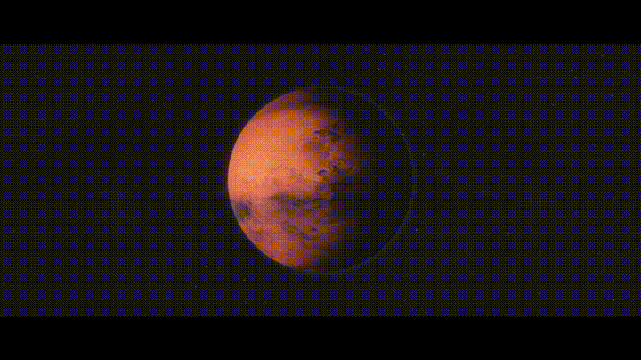
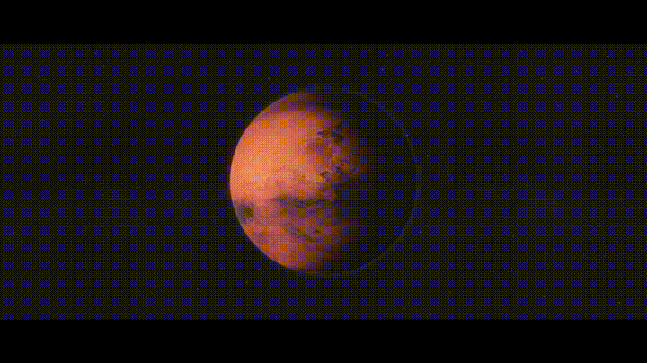

Type 2 Civilization
A type 2 civilization is much like a type 1 in many ways, except on a much grander scale.
Taking control of many planets in multiple star systems, and having built unimaginably large megastructures such as Dyson spheres/swarms, orbital rings, gigantic rotating habitats like O’Neill Cylinders, giving them a more than necessary amount habitation space, manufacturing and mining areas, and almost functionally unlimited amounts of energy used to create exponentially more and more mega-projects.
Admittedly, Star Trek depicts pretty well what a Type 2 Civilization would look like.
At this point on the scale, accurate terraforming becomes feasible. Sure, even at 0.7, we could do it if we wanted, but the bulk of the process would be guesswork.
With a star encompassed in mirrors much like the “How to Build a Dyson Sphere” video below, a type 2 could just beam energy to Mars for such a project instead of Elon Musk’s proposal of NUKING THE MATIAN POLES.